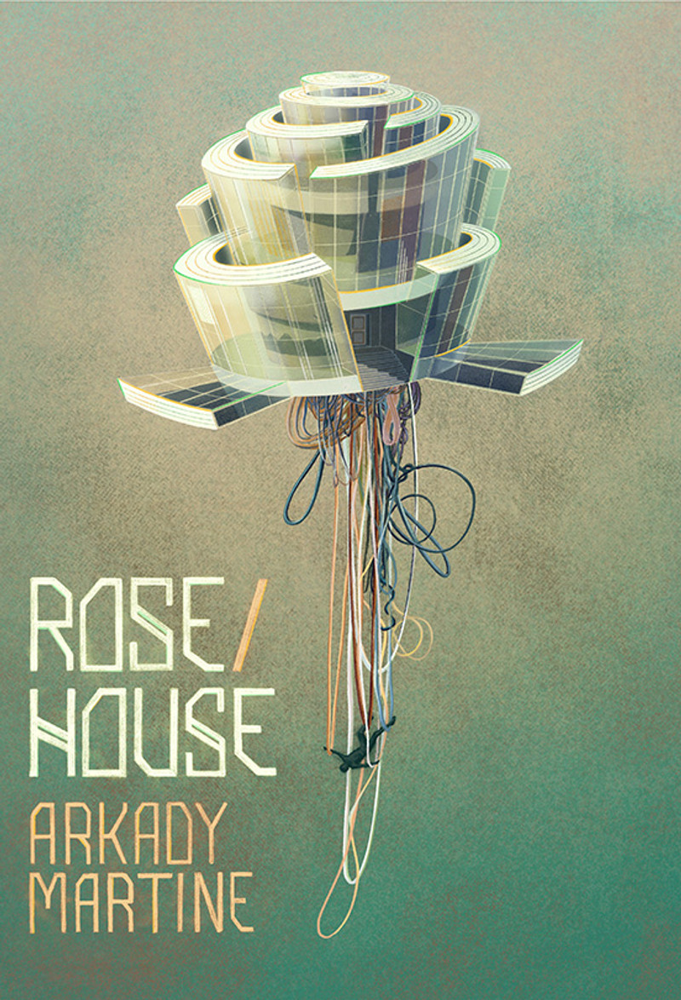
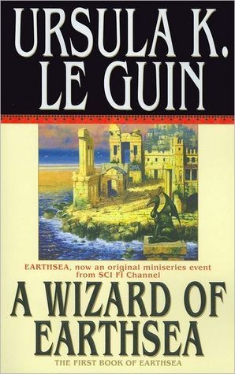
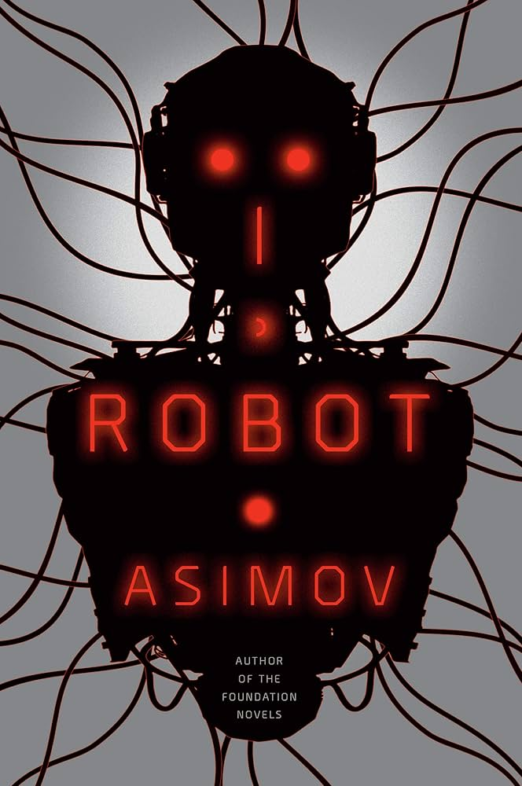

Here's that list I was talking about on the previous page:
| Cover | Title / Description | Author | Pages |
|---|---|---|---|
|
 |
Rose/House
Sentient house reports a murder. What happens next? |
Arkady Martine | 115 |

|
A Psalm for the Wild-Built
A tea monk meets an unexpected robot. Very cozy and heartwarming. |
Becky Chambers | 151 |
|
 |
A Wizard of Earthsea (Earthsea #1)
The makings of the greatest sorcerer in Earthsea |
Ursula Le Guin | 183 |

|
Project Hail Mary
A lone astronaut on a last-chance mission. |
Andy Weir | 476 |
|
The Long Way to a Small, Angry Planet
Cast of unique characters on a small space ship. |
Becky Chambers | 518 | |
|
Ancillary Justice (Imperial Radch #1)
Soldier on a quest for revenge. |
Anne Leckie | 386 | |
|
 |
I, Robot
A collection of interconnected short stories exploring the ethical, logical, and societal implications of Artificial Intelligence. |
Isaac Asimov | 224 |
|
Eleanor Oliphant Is Completely Fine
Eleanor Oliphant a socially awkward woman with a traumatic past who lives a regimented, lonely life until she and a new colleague help an elderly man, leading to a journey of friendship, healing, and self-discovery. |
Fail Honeyman | 390 | |
|
The Girl with All the Gifts
A post-apocalyptic science fiction novel about a special 10 year old girl with unique intelligence living in a military base under strict supervision. |
Mike Carey | 461 | |
|
The Library at Mount Char
Twelve children are taken from Earth and each are trained in a specialized "catalog" of cosmic knowledge by ‘Father” a god-like figure in a supernatural library. After father disappears his trainees fight over his legacy. |
Scott Hawkins | 390 |